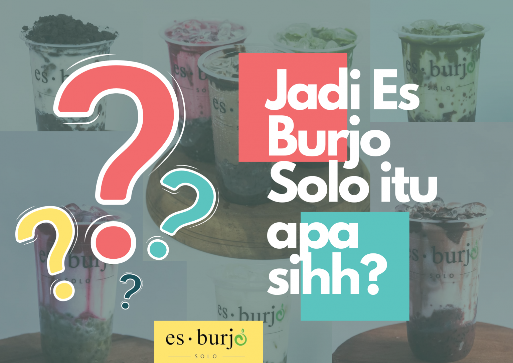

"Jadi Es Burjo Solo itu apa sih???"
Es Burjo Solo adalah minuman kekinian yang sedang populer di Indonesia. Terbuat dari bahan-bahan segar seperti buah-buahan, susu, dan es serut, serta ditambahkan topping seperti cincau, jelly, atau kacang merah. Minuman ini memberikan sensasi segar dan manis bagi penggemarnya, dan cocok dijadikan sebagai minuman penyegar di saat cuaca panas.
Asal Usul Es Burjo Solo berasal dari pemikiran inovatif anak muda yang mengkombinasikan bubur kacang hijau atau ketan hitam dengan minuman kekinian yang viral pada saat itu. Es Burjo Solo merupakan inovasi baru yang bertujuan untuk menjadikan kota Solo terkenal dengan produknya. Dengan kelezatannya, Es Burjo Solo menjadi salah satu minuman kekinian yang paling populer di Solo saat ini.
Es Burjo Solo tidak hanya menawarkan kelezatan rasa, tetapi juga memiliki berbagai topping yang unik. Anda dapat memilih topping seperti kacang hijau, tape ketan hitam, nata de coco, biji selasih, dan lainnya. Topping ini memberikan sensasi kenyal dan menambahkan rasa yang berbeda pada minuman ini. Nikmati keunikan dan lezatnya Es Burjo Solo dengan topping pilihan Anda.
Cara Membuat Es Burjo Solo Untuk membuat Es Burjo Solo, dibutuhkan bahan-bahan seperti buah-buahan segar (seperti semangka, melon, dan stroberi), susu, es serut, dan topping seperti cincau, jelly, atau kacang merah. Cara membuatnya sangat mudah, yaitu:- Siapkan Susu UHT
- Siapkan es batu
- Siapkan Bubur Kacang Hijau atau Ketan hitam Ambil
- Ambil gelas saji, lalu tambahkan burjo/ketan dalam gelas
- Tambahkan es batu dan susu ke dalam gelas, secukupnya.
- Beri topping sesuai selera, seperti coklat, oreo, atau matcha.
- Kemudian, Es Burjo Solo siap disajikan dan dinikmati.
Keunikan Es Burjo Solo terletak pada rasa segar dan manis dari buah-buahan segar yang digunakan. Topping yang beragam seperti cincau, jelly, atau kacang merah juga menambah variasi dan kenikmatan dalam minuman ini. Es Burjo Solo dapat dijadikan sebagai alternatif minuman sehat dan lezat di tengah kesibukan sehari-hari.
Es Burjo Solo juga menawarkan peluang bisnis yang menjanjikan. Dengan permintaan pasar yang tinggi, bisnis Es Burjo Solo dapat sukses jika dikelola dengan baik. Perencanaan yang matang, strategi pemasaran yang tepat, kualitas bahan yang baik, serta pelayanan yang ramah dan profesional adalah faktor-faktor penting dalam menjalankan bisnis Es Burjo Solo.